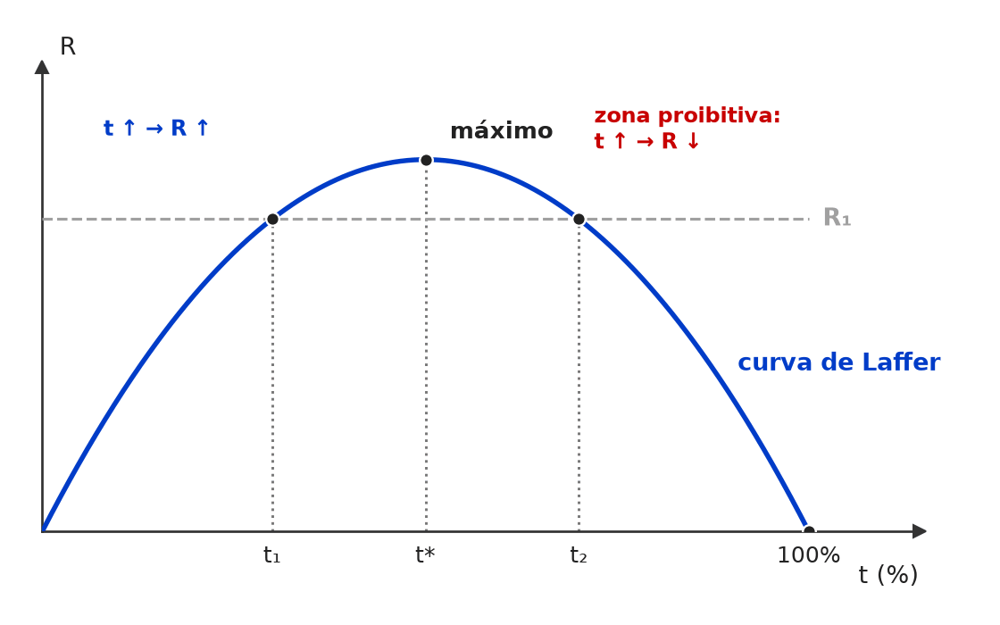

[C/E - CEBRASPE › TJ/PA/2025 › Conceitos de déficit e dívida]Julgue os próximos itens, acerca dos conceitos de déficit e dívida pública. Item: A dívida pública bruta representa o total de obrigações financeiras assumidas pelo setor público, independentemente da existência de ativos financeiros correspondentes. | ✅ CERTO A dívida pública bruta representa o total de obrigações financeiras assumidas pelo setor público, independentemente da existência de ativos financeiros correspondentes. 🎯 Em poucas palavras: Dívida bruta = só o passivo, sem abater ativos; a líquida desconta reservas, créditos e disponibilidades do setor público. 📖 Destrinchando o tema:
🧐 Dissecando a redação do item: [literalidade · contraintuitivo] Reproduz a definição de manual. O “independentemente” soa como modulador absoluto e induz o ERRADO, mas aqui é justamente o traço que define o conceito “bruto”. 😈 Para dificultar:
|
❌ [C/E - CEBRASPE › TJ/PA/2025 › Conceitos de déficit e dívida]Julgue os próximos itens, acerca dos conceitos de déficit e dívida pública. Item: O financiamento do déficit primário por meio da emissão de dívida pública ocasiona, automaticamente, o aumento da dívida líquida do setor público. | ❌ ERRADO O financiamento do déficit primário por meio da emissão de dívida pública ocasiona, automaticamente, o aumento da dívida líquida do setor público. 🎯 Em poucas palavras: Emitir título eleva automaticamente a dívida bruta; a líquida desconta os ativos e ainda depende de juros e ajustes patrimoniais — por isso o “automaticamente” derruba o item. ⚠️ Gabarito contestável: mantido o ERRADO da fonte. Pela identidade do BCB, ΔDLSP = NFSP + ajustes (cambial, patrimoniais); como o déficit primário entra nas NFSP, gastá-lo com recursos de dívida tende, sim, a elevar a dívida líquida. O ERRADO se sustenta só pela leitura estrita do “automaticamente”: no ato da emissão, caixa e passivo sobem juntos, e o efeito final sobre a DLSP ainda pode ser compensado por ajustes (ex.: valorização das reservas numa depreciação do real). 📖 Destrinchando o tema:
🧐 Dissecando a redação do item: [troca de conceito · modulador absoluto] O item cola o efeito certo (emissão → aumento de dívida) no conceito errado (líquida em vez de bruta) e reforça com “automaticamente”. 🔥 CEBRASPE explora a dupla bruta × líquida em quase todo bloco de dívida pública. 😈 Para dificultar:
✍️ Reescrita correta: O financiamento do déficit primário por meio da emissão de dívida pública ocasiona, automaticamente, o aumento da dívida bruta do setor público. |
❌ [C/E - CEBRASPE › TJ/PA/2025 › Conceitos de déficit e dívida]Acerca da contabilidade do setor público e de suas métricas, julgue os itens subsequentes. Item: A necessidade de financiamento do setor público pode ser entendida como a variação da dívida pública líquida. | ✅ CERTO A necessidade de financiamento do setor público pode ser entendida como a variação da dívida pública líquida. 🎯 Em poucas palavras: O BCB mede as NFSP pelo critério abaixo da linha: é a variação da dívida líquida no período, descontados os ajustes que não decorrem de fluxo fiscal. 📖 Destrinchando o tema:
🧐 Dissecando a redação do item: [modulador relativo · paráfrase fiel] Quem conhece o refino da dívida fiscal líquida é tentado a marcar ERRADO; o “pode ser entendida” torna a aproximação aceitável. Em CEBRASPE, modulador relativo diante de definição correta em linhas gerais = CERTO. 😈 Para dificultar:
|
[C/E - CEBRASPE › TJ/PA/2025 › Conceitos de déficit e dívida]Acerca da contabilidade do setor público e de suas métricas, julgue os itens subsequentes. Item: Se, em determinado ano, um país registrar déficit nominal, consequentemente, ele também registrará déficit operacional. | ❌ ERRADO Se, em determinado ano, um país registrar déficit nominal, consequentemente, ele também registrará déficit operacional. 🎯 Em poucas palavras: O operacional exclui a correção monetária dos juros; com inflação, pode haver déficit nominal e superávit operacional ao mesmo tempo. 📖 Destrinchando o tema:
🧐 Dissecando a redação do item: [nexo indevido · inversão] O conector “consequentemente” cria uma implicação que só existe no sentido oposto (operacional ⇒ nominal). Item de implicação entre medidas fiscais se resolve perguntando qual delas inclui mais componentes. 😈 Para dificultar:
✍️ Reescrita correta: Se, em determinado ano, um país registrar déficit nominal, não necessariamente ele também registrará déficit operacional. |
[C/E - IDEG – Prof. Bozan › Pré-TPS/2026 › Conceitos de déficit e dívida]Julgue o item a respeito da medição do desempenho fiscal do governo no contexto da economia do setor público. Item: O déficit primário é uma medida essencial para determinar o tamanho real do governo porque ele exclui todos os pagamentos de juros, focando apenas no efeito das despesas não financeiras superando as receitas não financeiras. | ✅ CERTO O déficit primário é uma medida essencial para determinar o tamanho real do governo porque ele exclui todos os pagamentos de juros, focando apenas no efeito das despesas não financeiras superando as receitas não financeiras. 🎯 Em poucas palavras: A definição está certa: o resultado primário exclui todos os juros e compara receitas e despesas não financeiras. Por isso mede a política fiscal do governo atual, sem o peso da dívida herdada. ⚠️ Gabarito contestável: A segunda parte (exclusão de todos os juros; despesas não financeiras maiores que as receitas não financeiras) é a definição exata. Já “determinar o tamanho real do governo” é impreciso: o tamanho do Estado se mede pelo gasto ou pela carga tributária em proporção do PIB, e o primário mede o esforço fiscal. A banca do simulado deu CERTO, lendo “tamanho real” como a dimensão das contas correntes do governo sem os juros; numa prova CEBRASPE, essa expressão abriria espaço para recurso. 📖 Destrinchando o tema:
🧐 Dissecando a redação do item: [literalidade · detalhe] A definição do primário está perfeita; o risco do item está na justificativa de abertura (“tamanho real do governo”), que a banca aceitou. Note também o “todos os pagamentos de juros”: correto aqui, porque só o primário exclui os juros por inteiro — o operacional exclui apenas a correção monetária. 😈 Para dificultar:
|
❌ [C/E - IDEG – Prof. Bozan › Pré-TPS/2026 › Conceitos de déficit e dívida]Julgue o item a respeito da medição do desempenho fiscal do governo no contexto da economia do setor público. Item: O déficit operacional é calculado adicionando a correção monetária sobre os juros nominais ao déficit primário. Isso ocorre porque o déficit operacional busca refletir o efeito da inflação nos juros pagos pelo governo, ajustando o déficit nominal e proporcionando uma representação mais precisa do impacto fiscal real sem as distorções inflacionárias nos cálculos de juros. | ❌ ERRADO O déficit operacional é calculado adicionando a correção monetária sobre os juros nominais ao déficit primário. Isso ocorre porque o déficit operacional busca refletir o efeito da inflação nos juros pagos pelo governo, ajustando o déficit nominal e proporcionando uma representação mais precisa do impacto fiscal real sem as distorções inflacionárias nos cálculos de juros. 🎯 Em poucas palavras: O operacional não soma a correção monetária: ele a retira. É o primário mais os juros reais — ou o nominal menos a correção monetária. 📖 Destrinchando o tema:
🧐 Dissecando a redação do item: [inversão · meia-verdade] O item junta duas verdades — o operacional lida com a inflação embutida nos juros; a correção monetária está nos juros nominais — e inverte a operação (soma em vez de subtrai). O “refletir” reforça a confusão: o objetivo é eliminar o efeito, como a própria frase admite no final (“sem as distorções”). 😈 Para dificultar:
✍️ Reescrita correta: O déficit operacional é calculado adicionando os juros reais ao déficit primário (ou subtraindo do déficit nominal a correção monetária). Isso ocorre porque o déficit operacional busca expurgar o efeito da inflação nos juros pagos pelo governo, ajustando o déficit nominal e proporcionando uma representação mais precisa do impacto fiscal real sem as distorções inflacionárias nos cálculos de juros. |
[C/E - IDEG – Prof. Bozan › Pré-TPS/2026 › Conceitos de déficit e dívida]Julgue o item a respeito da medição do desempenho fiscal do governo no contexto da economia do setor público. Item: A inflação tem o efeito de diminuir os juros nominais pagos pelo governo, pois ela dilui o valor efetivo das obrigações financeiras, resultando em uma carga menor de juros no cálculo do déficit nominal. | ❌ ERRADO A inflação tem o efeito de diminuir os juros nominais pagos pelo governo, pois ela dilui o valor efetivo das obrigações financeiras, resultando em uma carga menor de juros no cálculo do déficit nominal. 🎯 Em poucas palavras: A inflação aumenta os juros nominais: como ela corrói o valor real da dívida, os credores exigem compensação (a correção monetária), e o déficit nominal incha. 📖 Destrinchando o tema:
🧐 Dissecando a redação do item: [inversão · nexo indevido] Parte de uma verdade (a inflação dilui o valor real das obrigações) para tirar dela a conclusão oposta à correta. A pista está em “juros nominais”: tudo o que é nominal sobe com a inflação. 😈 Para dificultar:
✍️ Reescrita correta: A inflação tem o efeito de aumentar os juros nominais pagos pelo governo, pois os credores exigem compensação pela inflação, que dilui o valor efetivo das obrigações financeiras, resultando em uma carga maior de juros no cálculo do déficit nominal. |
[C/E - IDEG – Prof. Bozan › Pré-TPS/2026 › Conceitos de déficit e dívida]Sobre a apresentação das contas do governo e os diferentes conceitos relacionados ao déficit e à dívida pública, julgue o item a seguir. Item: O déficit operacional é obtido ao subtrair a correção monetária dos juros nominais do déficit nominal, sendo importante para calcular o impacto dos juros reais sobre as contas do governo, excluindo o impacto da inflação. | ✅ CERTO O déficit operacional é obtido ao subtrair a correção monetária dos juros nominais do déficit nominal, sendo importante para calcular o impacto dos juros reais sobre as contas do governo, excluindo o impacto da inflação. 🎯 Em poucas palavras: Operacional = nominal − correção monetária = primário + juros reais. Mostra o peso real da dívida nas contas, sem o inchaço inflacionário dos juros nominais. 📖 Destrinchando o tema:
🧐 Dissecando a redação do item: [literalidade] Definição correta, com o verbo certo (“subtrair”) e o objetivo certo (juros reais, sem inflação). A banca costuma fabricar o ERRADO trocando “subtrair” por “adicionar” ou “nominal” por “primário” como ponto de partida. 😈 Para dificultar:
|
[C/E - IDEG – Prof. Bozan › Pré-TPS/2026 › Conceitos de déficit e dívida]Sobre a apresentação das contas do governo e os diferentes conceitos relacionados ao déficit e à dívida pública, julgue o item a seguir. Item: A dívida fiscal líquida é a dívida total do setor público, incluindo ajustes patrimoniais (saldo de privatizações menos reconhecimento de dívidas), e reflete as obrigações que ainda precisam ser pagas para o setor financeiro, tanto público quanto privado. | ❌ ERRADO A dívida fiscal líquida é a dívida total do setor público, incluindo ajustes patrimoniais (saldo de privatizações menos reconhecimento de dívidas), e reflete as obrigações que ainda precisam ser pagas para o setor financeiro, tanto público quanto privado. 🎯 Em poucas palavras: A dívida fiscal líquida é a DLSP menos os ajustes patrimoniais e metodológicos: ela os exclui, para isolar a dívida gerada pelos déficits. 📖 Destrinchando o tema:
🧐 Dissecando a redação do item: [inversão · restrição indevida] O item inverte o tratamento dos ajustes (incluir × excluir) e encolhe a lista de credores. O próprio adjetivo “fiscal” é a pista: a dívida fiscal é a que vem dos resultados fiscais, sem o que não é fiscal (privatização, esqueletos, câmbio). 😈 Para dificultar:
✍️ Reescrita correta: A dívida fiscal líquida é a dívida líquida do setor público, excluídos os ajustes patrimoniais (saldo de privatizações menos reconhecimento de dívidas), e reflete as obrigações que ainda precisam ser pagas ao sistema financeiro (público e privado), ao setor privado não financeiro e ao resto do mundo. |
[C/E - Nabuco › Conceitos de déficit e dívida]Em relação à macroeconomia, julgue o item a seguir. Item: O financiamento do déficit primário por meio da emissão de dívida pública ocasiona, automaticamente, o aumento da dívida líquida do setor público. | ❌ ERRADO O financiamento do déficit primário por meio da emissão de dívida pública ocasiona, automaticamente, o aumento da dívida líquida do setor público. 🎯 Em poucas palavras: A DLSP é dívida bruta menos ativos: emitir título, em si, não a move (entra caixa no ativo). O que a eleva é o déficit — e, mesmo assim, ajustes patrimoniais e cambiais podem compensá-lo. Não há automatismo. ⚠️ Gabarito contestável: O gabarito ERRADO se apoia no “automaticamente”. Mas, mantido o resto constante, um déficit primário gasto e coberto com dívida eleva a DLSP — é o que dizem as NFSP. A leitura da banca só se sustenta separando a emissão (neutra para a dívida líquida) do déficit, e lembrando que ajustes no mesmo período podem mais que compensá-lo. CERTO seria defensável numa leitura ceteris paribus. 📖 Destrinchando o tema:
🧐 Dissecando a redação do item: [modulador absoluto · nexo indevido] O “automaticamente” amarra a emissão à dívida líquida, ignorando que a contrapartida da emissão é um ativo e que há ajustes no período. Itens sobre DLSP quase sempre testam o efeito de ativos (reservas, caixa, créditos). 😈 Para dificultar:
✍️ Reescrita correta: O financiamento do déficit primário por meio da emissão de dívida pública não ocasiona, automaticamente, o aumento da dívida líquida do setor público, pois a emissão eleva também os ativos e a variação da DLSP depende ainda dos ajustes do período. |
[C/E - Clipping › Simuladão Clipping › Conceitos de déficit e dívida]A política fiscal é instrumento central para o equilíbrio macroeconômico e a sustentabilidade da dívida pública. Com base nisso, julgue o item a seguir. Item: O conceito de déficit nominal considera apenas o saldo primário do governo, excluindo os encargos com os juros da dívida pública. | ❌ ERRADO O conceito de déficit nominal considera apenas o saldo primário do governo, excluindo os encargos com os juros da dívida pública. 🎯 Em poucas palavras: A definição é a do resultado primário. O resultado nominal é o primário mais os juros nominais da dívida — é a medida completa das necessidades de financiamento. 📖 Destrinchando o tema:
🧐 Dissecando a redação do item: [troca de conceito] Definição correta do primário com o rótulo trocado para “nominal”. O “apenas” e o “excluindo” são as pistas: o nominal é o conceito mais amplo, o único que não exclui nada. 😈 Para dificultar:
🧠 Mnemônico:
✍️ Reescrita correta: O conceito de déficit primário considera apenas o saldo primário do governo, excluindo os encargos com os juros da dívida pública. |
[C/E - Nidi/Jacqueline Bueno › Simulado Julho/2025 › Conceitos de déficit e dívida]Sobre os conceitos pertencentes ao ramo da Economia que se dedica ao estudo do Setor Público e seu orçamento e sobre o princípio da Equivalência Ricardiana, julgue certo ou errado os itens a seguir. Item: O resultado nominal, seja ele positivo ou negativo, exclui do seu cálculo a correção monetária e cambial que incide sobre a dívida pública. | ❌ ERRADO O resultado nominal, seja ele positivo ou negativo, exclui do seu cálculo a correção monetária e cambial que incide sobre a dívida pública. 🎯 Em poucas palavras: O resultado nominal é o mais abrangente: soma ao primário os juros nominais, que contêm a correção monetária. Quem a exclui é o operacional. 📖 Destrinchando o tema:
🧐 Dissecando a redação do item: [troca de conceito · inversão] Descreve o operacional e o rotula de nominal, trocando “inclui” por “exclui”. O “seja ele positivo ou negativo” é enchimento para dar ar técnico. Pista: “nominal” é justamente o conceito sem expurgo inflacionário. 😈 Para dificultar:
✍️ Reescrita correta: O resultado nominal, seja ele positivo ou negativo, inclui no seu cálculo a correção monetária e cambial que incide sobre a dívida pública. |
[C/E - Nabuco › Pré-TPS/2023 › Conceitos de déficit e dívida]No que se refere aos conceitos de déficit público e de dívida pública, julgue o item a seguir. Item: Os indicadores fiscais incluem as medidas de fluxos, como receitas e despesas, e de estoques, como déficit e dívida. | ❌ ERRADO Os indicadores fiscais incluem as medidas de fluxos, como receitas e despesas, e de estoques, como déficit e dívida. 🎯 Em poucas palavras: O déficit é fluxo (medido num período, como receitas e despesas); só a dívida é estoque (medida numa data). 📖 Destrinchando o tema:
🧐 Dissecando a redação do item: [troca de conceito] Lista de exemplos com um intruso no grupo errado. Pista: receitas e despesas são fluxos, e o déficit é a diferença entre elas — a diferença entre dois fluxos é fluxo. 😈 Para dificultar:
✍️ Reescrita correta: Os indicadores fiscais incluem as medidas de fluxos, como receitas e despesas, e de estoques, como |
[C/E - Prof. Rodrigo Teixeira › Intensivo Pré-TPS/2023 › Conceitos de déficit e dívida]A respeito da política fiscal e da dívida pública, julgue o item a seguir. Item: As operações compromissadas do Banco Central entram no estoque da Dívida Bruta do Governo Geral (DBGG), bem como as dívidas das empresas estatais, como Petrobrás e Eletrobrás. | ❌ ERRADO As operações compromissadas do Banco Central entram no estoque da Dívida Bruta do Governo Geral (DBGG), bem como as dívidas das empresas estatais, como Petrobrás e Eletrobrás. 🎯 Em poucas palavras: A DBGG cobre só o governo geral (União, estados e municípios) e, do BC, apenas as compromissadas. Dívidas de estatais ficam fora. 📖 Destrinchando o tema:
🧐 Dissecando a redação do item: [meia-verdade · extrapolação] A primeira parte é verdadeira (compromissadas entram); o “bem como” enxerta as estatais. Os exemplos escolhidos agravam: Petrobras e Eletrobras estão fora até da DLSP, que inclui estatais. 😈 Para dificultar:
✍️ Reescrita correta: As operações compromissadas do Banco Central entram no estoque da Dívida Bruta do Governo Geral (DBGG), mas não as dívidas das empresas estatais, como Petrobrás e Eletrobrás. |
[C/E - Prof. Rodrigo Teixeira › Intensivo Pré-TPS/2023 › Conceitos de déficit e dívida]A respeito da política fiscal e da dívida pública, julgue o item a seguir. Item: A política fiscal expansionista tende a aumentar as Necessidades de Financiamento do Setor Público e a dívida pública. | ✅ CERTO A política fiscal expansionista tende a aumentar as Necessidades de Financiamento do Setor Público e a dívida pública. 🎯 Em poucas palavras: Mais gasto ou menos imposto piora o resultado → as NFSP sobem → o déficit é coberto com nova dívida, e o estoque cresce. 📖 Destrinchando o tema:
🧐 Dissecando a redação do item: [literalidade · modulador relativo] Encadeamento de manual, protegido pelo “tende a”. Versões ERRADO costumam trocar o sinal (“reduz as NFSP”) ou tornar o efeito absoluto (“necessariamente eleva a razão dívida/PIB”). 😈 Para dificultar:
|
❌ [C/E - Prof. Rodrigo Teixeira › Intensivo Pré-TPS/2023 › Conceitos de déficit e dívida]A respeito da política fiscal e da dívida pública, julgue o item a seguir. Item: A Dívida Bruta do Governo Geral (DBGG) é mais abrangente que a Dívida Líquida do Setor Público (DLSP), pois inclui os estados e municípios, bem como as empresas estatais. | ❌ ERRADO A Dívida Bruta do Governo Geral (DBGG) é mais abrangente que a Dívida Líquida do Setor Público (DLSP), pois inclui os estados e municípios, bem como as empresas estatais. 🎯 Em poucas palavras: É o contrário: a DLSP é mais abrangente em cobertura (governo geral + BC + estatais não financeiras). A DBGG fica no governo geral e não inclui estatais. 📖 Destrinchando o tema:
🧐 Dissecando a redação do item: [inversão · troca de ator] Inverte a comparação de abrangência e enxerta as estatais na DBGG. Pista: o próprio nome — “governo geral” é a parte; “setor público”, o todo. 😈 Para dificultar:
✍️ Reescrita correta: A Dívida Bruta do Governo Geral (DBGG) é menos abrangente que a Dívida Líquida do Setor Público (DLSP), pois inclui os estados e municípios, mas não as empresas estatais. |
❌ [C/E - Prof. Rodrigo Teixeira › Intensivo Pré-TPS/2023 › Conceitos de déficit e dívida]A respeito da política fiscal e da dívida pública, julgue o item a seguir. Item: O resultado nominal do setor público, ao excluir o pagamento de juros sobre a dívida pública, não reflete o crescimento do estoque da dívida, o que é feito pelo conceito de resultado primário. | ❌ ERRADO O resultado nominal do setor público, ao excluir o pagamento de juros sobre a dívida pública, não reflete o crescimento do estoque da dívida, o que é feito pelo conceito de resultado primário. 🎯 Em poucas palavras: O item troca os papéis: o nominal inclui os juros e por isso reflete o crescimento da dívida; o primário exclui os juros e mede o esforço fiscal. 📖 Destrinchando o tema:
🧐 Dissecando a redação do item: [inversão · troca de conceito] Atribui ao nominal a característica do primário (excluir juros) e transfere ao primário a função do nominal. A frase é coerente por dentro — quem exclui juros não reflete a dívida —, por isso engana; a pista é lembrar que “nominal” é o conceito completo. 😈 Para dificultar:
✍️ Reescrita correta: O resultado nominal do setor público, ao incluir o pagamento de juros sobre a dívida pública, reflete o crescimento do estoque da dívida, o que não é feito pelo conceito de resultado primário. |
[C/E - Prof. Rodrigo Teixeira › Intensivo Pré-TPS/2023 › Conceitos de déficit e dívida]A respeito da política fiscal e da dívida pública, julgue o item a seguir. Item: As operações compromissadas do Banco Central entram no estoque da Dívida Bruta do Governo Geral (DBGG), de maneira que o crescimento destas operações em período recente, associadas à necessidade de esterilização da aquisição de reservas internacionais, tem elevado a dívida pública. | ✅ CERTO As operações compromissadas do Banco Central entram no estoque da Dívida Bruta do Governo Geral (DBGG), de maneira que o crescimento destas operações em período recente, associadas à necessidade de esterilização da aquisição de reservas internacionais, tem elevado a dívida pública. 🎯 Em poucas palavras: Pela metodologia do Banco Central do Brasil, a DBGG inclui as operações compromissadas; ao esterilizar a compra de reservas, o BC as ampliou e, com elas, a dívida bruta. 📖 Destrinchando o tema:
🧐 Dissecando a redação do item: [detalhe] Item CERTO por um pormenor metodológico: quem só conhece a DBGG como “dívida do governo” tende a achar que operação do BC fica de fora. A frase traz também o nexo causal correto (esterilização → compromissadas → DBGG). 😈 Para dificultar:
|
[C/E - Banca não identificada › Conceitos de déficit e dívida]Acerca dos conceitos de déficit e dívida públicos, julgue o item a seguir. Item: O déficit público nominal é igual à variação da dívida líquida do setor público apurada no ano. | ❌ ERRADO O déficit público nominal é igual à variação da dívida líquida do setor público apurada no ano. 🎯 Em poucas palavras: As NFSP nominais correspondem à variação da dívida líquida descontados os ajustes patrimoniais e metodológicos (privatizações, reconhecimento de dívidas, efeito do câmbio). Ou seja, igualam a variação da dívida fiscal líquida, não a da DLSP. 📖 Destrinchando o tema:
🧐 Dissecando a redação do item: [meia-verdade · troca de conceito] Em manuais introdutórios, “déficit = variação da dívida” é aproximação aceita; o item a apresenta como igualdade exata com a DLSP e esquece os ajustes. Pista: “igual” + um agregado específico de dívida pede o conceito ajustado. 😈 Para dificultar:
✍️ Reescrita correta: O déficit público nominal é igual à variação da dívida fiscal líquida (a dívida líquida do setor público descontados os ajustes patrimoniais e metodológicos) apurada no ano. |
[C/E - CEBRASPE › TJ/PA/2025 › Financiamento e sustentabilidade]Acerca da contabilidade do setor público e de suas métricas, julgue os itens subsequentes. Item: De acordo com o Tesouro Nacional, incluem-se entre as diretrizes qualitativas da dívida pública federal o aumento do prazo médio da dívida e a substituição de títulos prefixados por títulos de taxas flutuantes. | ❌ ERRADO De acordo com o Tesouro Nacional, incluem-se entre as diretrizes qualitativas da dívida pública federal o aumento do prazo médio da dívida e a substituição de títulos prefixados por títulos de taxas flutuantes. 🎯 Em poucas palavras: O PAF do Tesouro manda o contrário: trocar títulos de taxa flutuante (LFT, Selic) por prefixados e indexados a preços, e alongar o prazo. 📖 Destrinchando o tema:
🧐 Dissecando a redação do item: [inversão · meia-verdade] A 1ª diretriz (prazo médio) está certa e dá credibilidade; o erro foi enxertado na 2ª, que inverte origem e destino da troca. Em item com “substituição de X por Y”, confira sempre qual lado sai e qual entra. 😈 Para dificultar:
✍️ Reescrita correta: De acordo com o Tesouro Nacional, incluem-se entre as diretrizes qualitativas da dívida pública federal o aumento do prazo médio da dívida e a substituição de títulos de taxas flutuantes por títulos prefixados ou vinculados a índices de preços. |
[C/E - Clipping › Simuladão Clipping › Financiamento e sustentabilidade]A política fiscal é instrumento central para o equilíbrio macroeconômico e a sustentabilidade da dívida pública. Com base nisso, julgue o item a seguir. Item: A existência de superávit primário garante, por definição, a redução do estoque da dívida pública líquida, independentemente da taxa de juros real e do crescimento do PIB. | ❌ ERRADO A existência de superávit primário garante, por definição, a redução do estoque da dívida pública líquida, independentemente da taxa de juros real e do crescimento do PIB. 🎯 Em poucas palavras: O superávit primário não paga juros por definição: se ele for menor que os juros, há déficit nominal e a dívida cresce. Para a razão dívida/PIB, contam ainda o juro real (r) e o crescimento (g). 📖 Destrinchando o tema:
🧐 Dissecando a redação do item: [modulador absoluto · contradição] Três absolutos em sequência: “garante”, “por definição” e “independentemente”. O item ainda descarta as duas variáveis (juros e crescimento) que a equação da dívida põe no centro. 😈 Para dificultar:
✍️ Reescrita correta: A existência de superávit primário não garante a redução do estoque da dívida pública líquida, que depende de o superávit superar os juros; para a razão dívida/PIB, contam também a taxa de juros real e o crescimento do PIB. |
❌ [C/E - Nidi/Jacqueline Bueno › Simulado Julho/2025 › Financiamento e sustentabilidade]Sobre os conceitos pertencentes ao ramo da Economia que se dedica ao estudo do Setor Público e seu orçamento e sobre o princípio da Equivalência Ricardiana, julgue certo ou errado os itens a seguir. Item: Estoques elevados de dívida pública exigem déficits primários e nominais menores para que, assim, seja possível manter a razão dívida/PIB constante, garantindo a sustentabilidade da dívida pública. | ❌ ERRADO Estoques elevados de dívida pública exigem déficits primários e nominais menores para que, assim, seja possível manter a razão dívida/PIB constante, garantindo a sustentabilidade da dívida pública. 🎯 Em poucas palavras: Com juros acima do crescimento, dívida alta exige superávit primário maior; e o déficit nominal compatível com dívida/PIB estável é maior, não menor, quanto maior a dívida. 📖 Destrinchando o tema:
🧐 Dissecando a redação do item: [meia-verdade · generalização] A intuição “dívida alta pede mais esforço fiscal” é correta para o primário, mas o item a estende ao nominal — onde vale o oposto — e omite a condição r > g. Quando a frase junta “primários e nominais” no mesmo verbo, teste cada um separadamente. 😈 Para dificultar:
✍️ Reescrita correta: Estoques elevados de dívida pública exigem superávits primários maiores, quando a taxa real de juros supera o crescimento do PIB, para que, assim, seja possível manter a razão dívida/PIB constante, garantindo a sustentabilidade da dívida pública. |
[C/E - Nidi/Jacqueline Bueno › Simulado Abril/2025 › Financiamento e sustentabilidade]Acerca dos indicadores orçamentários e da equivalência ricardiana, julgue o item a seguir. Item: O estoque total de dívida pública, em termos reais, permanecerá constante, caso o superávit primário seja igual ao pagamento dos juros reais da dívida. | ✅ CERTO O estoque total de dívida pública, em termos reais, permanecerá constante, caso o superávit primário seja igual ao pagamento dos juros reais da dívida. 🎯 Em poucas palavras: Superávit primário = juros reais ⇔ resultado operacional zero: o governo paga o custo real de carregar a dívida e o principal real não muda. 📖 Destrinchando o tema:
🧐 Dissecando a redação do item: [literalidade · detalhe] Reproduz a condição de estabilidade da dívida real. O risco está na palavra decisiva: “em termos reais” e “estoque”, não “dívida/PIB”. Troque o objeto e o item vira ERRADO. 😈 Para dificultar:
|
[C/E - Nabuco › Pré-TPS/2023 › Financiamento e sustentabilidade]Em relação às políticas monetária e fiscal, julgue o item a seguir. Item: Se o déficit primário do setor público é nulo e não há “ajustes patrimoniais” (isto é, ajustes nos ativos ou passivos do setor público devidos a privatizações, reconhecimentos de dívidas etc.), então a razão dívida pública/PIB aumentará se a taxa de juros real incidente sobre a dívida for maior do que a taxa de crescimento real do PIB. | ✅ CERTO Se o déficit primário do setor público é nulo e não há “ajustes patrimoniais” (isto é, ajustes nos ativos ou passivos do setor público devidos a privatizações, reconhecimentos de dívidas etc.), então a razão dívida pública/PIB aumentará se a taxa de juros real incidente sobre a dívida for maior do que a taxa de crescimento real do PIB. 🎯 Em poucas palavras: Com primário zero e sem ajustes, sobra Δb ≈ (r − g)·b: se r > g, Δb > 0 — a dívida cresce à taxa r e o PIB, à taxa g, menor. 📖 Destrinchando o tema:
🧐 Dissecando a redação do item: [literalidade · detalhe] Aplicação direta da equação, com as condições bem amarradas (primário nulo, sem ajustes, r > g). O cuidado é não confundir “razão dívida/PIB” com o estoque nominal da dívida, que, com primário nulo e juros positivos, sobe sempre. 😈 Para dificultar:
|
[C/E - Nabuco › Financiamento e sustentabilidade]Em relação ao sistema monetário e ao conceito de déficit público, julgue o item a seguir. Item: Em relação à dinâmica da razão da dívida pública no que se refere ao PIB, ceteris paribus, quanto menor a diferença entre a taxa real de juros e o crescimento real da economia, maior a variação dessa razão. | ❌ ERRADO Em relação à dinâmica da razão da dívida pública no que se refere ao PIB, ceteris paribus, quanto menor a diferença entre a taxa real de juros e o crescimento real da economia, maior a variação dessa razão. 🎯 Em poucas palavras: Pela equação Δb ≈ (r − g)·b − s, a variação da razão dívida/PIB cresce com (r − g). Diferença menor → variação menor (ou queda da razão). 📖 Destrinchando o tema:
🧐 Dissecando a redação do item: [inversão] Relação correta (r − g e Δb andam juntos) com o sentido trocado no fim. Itens com “quanto menor…, maior…” pedem que se confira o sinal na fórmula: aqui o coeficiente de (r − g) é positivo (b > 0). 😈 Para dificultar:
✍️ Reescrita correta: Em relação à dinâmica da razão da dívida pública no que se refere ao PIB, ceteris paribus, quanto menor a diferença entre a taxa real de juros e o crescimento real da economia, menor a variação dessa razão. |
[C/E - Banca não identificada › Financiamento e sustentabilidade]Considerando os instrumentos e os objetivos da política fiscal no Brasil, julgue o item. Item: O comportamento da dívida pública é afetado tanto pelo Tesouro Nacional, por meio dos leilões de títulos da dívida pública, quanto pelo Banco Central do Brasil, por meio do lançamento das operações compromissadas junto aos bancos comerciais. | ✅ CERTO O comportamento da dívida pública é afetado tanto pelo Tesouro Nacional, por meio dos leilões de títulos da dívida pública, quanto pelo Banco Central do Brasil, por meio do lançamento das operações compromissadas junto aos bancos comerciais. 🎯 Em poucas palavras: O Tesouro emite títulos em leilão para financiar o governo e rolar a dívida; o BCB, proibido de emitir títulos próprios, usa títulos do Tesouro em operações compromissadas para enxugar liquidez — e elas entram na dívida bruta. 📖 Destrinchando o tema:
🧐 Dissecando a redação do item: [literalidade · detalhe] O item soa estranho porque se pensa no BC como agente monetário, não fiscal. O detalhe que o torna CERTO é a inclusão das compromissadas na dívida bruta. Versões erradas costumam dizer que o BC emite títulos próprios. 😈 Para dificultar:
|
[C/E - Armstrong › Pré-TPS/2026 › Wagner e Laffer]Acerca da curva de Laffer e da relação entre alíquotas e arrecadação, julgue o item a seguir. Item: Qualquer elevação de alíquota a partir de níveis altos reduz a arrecadação, por definição da Curva de Laffer. | ❌ ERRADO Qualquer elevação de alíquota a partir de níveis altos reduz a arrecadação, por definição da Curva de Laffer. 🎯 Em poucas palavras: A curva de Laffer é uma possibilidade teórica: elevar a alíquota só reduz a receita acima da alíquota de receita máxima (t*), e “nível alto” não garante estar lá. 📖 Destrinchando o tema:
🧐 Dissecando a redação do item: [modulador absoluto · juízo indevido] Três marcas de absoluto: “qualquer”, o presente categórico “reduz” e “por definição”. A curva não define a posição de t*; apenas mostra que ela existe. 😈 Para dificultar:
✍️ Reescrita correta: Uma elevação de alíquota a partir de níveis altos pode reduzir a arrecadação, se a alíquota já estiver acima da que maximiza a receita, segundo a Curva de Laffer. |
[C/E - Prof. Rodrigo Teixeira › Wagner e Laffer]A respeito dos mercados competitivos e da tributação, julgue o item. Item: A Curva de Laffer mostra que há limites para o governo elevar a arrecadação tributária através da elevação de impostos. | ✅ CERTO A Curva de Laffer mostra que há limites para o governo elevar a arrecadação tributária através da elevação de impostos. 🎯 Em poucas palavras: A curva de Laffer liga alíquota e arrecadação: a receita sobe até uma alíquota t* e depois cai, chegando a zero com alíquota de 100%. Elevar impostos não eleva a arrecadação indefinidamente. 📖 Destrinchando o tema:
🧐 Dissecando a redação do item: [literalidade] Enunciado básico da curva. Os itens da banca sobre Laffer giram quase sempre em torno de absolutos: “qualquer”, “sempre”, “ilimitada”, “relação inversa”. Este, sem modulador absoluto, é CERTO. 😈 Para dificultar:
|
[C/E - Banca não identificada › Wagner e Laffer]Acerca da curva de Laffer e da relação entre alíquotas e arrecadação, julgue o item a seguir. Item: Segundo o modelo da curva de Laffer, a elevação de alíquotas em uma estrutura tributária já representada por alta carga tributária pode afetar negativamente o volume arrecadado. | ✅ CERTO Segundo o modelo da curva de Laffer, a elevação de alíquotas em uma estrutura tributária já representada por alta carga tributária pode afetar negativamente o volume arrecadado. 🎯 Em poucas palavras: Na zona proibitiva da curva de Laffer (acima da alíquota de receita máxima), elevar a alíquota encolhe tanto a base que a arrecadação cai. 📖 Destrinchando o tema:
🧐 Dissecando a redação do item: [modulador relativo · literalidade] O “pode” e a condição “já representada por alta carga” salvam o item: ele descreve a parte descendente da curva sem afirmar que toda alta de alíquota reduz a receita. Retire o “pode” e ponha “sempre”, e o item vira ERRADO. 😈 Para dificultar:
|
[C/E - Banca não identificada › Wagner e Laffer]Acerca da curva de Laffer e da relação entre alíquotas e arrecadação, julgue o item a seguir. Item: A Curva de Laffer explica a ilimitada capacidade de arrecadar de todos os governos que fixam habitualmente altas cargas tributárias. | ❌ ERRADO A Curva de Laffer explica a ilimitada capacidade de arrecadar de todos os governos que fixam habitualmente altas cargas tributárias. 🎯 Em poucas palavras: A curva de Laffer mostra o oposto: há um teto de arrecadação (em t*), e alíquotas altas demais podem reduzir a receita. 📖 Destrinchando o tema:
🧐 Dissecando a redação do item: [inversão · modulador absoluto] O item inverte a mensagem da curva (limite → “ilimitada”) e ainda generaliza para “todos os governos”. Dois absolutos num item de teoria econômica quase sempre indicam ERRADO. 😈 Para dificultar:
✍️ Reescrita correta: A Curva de Laffer explica a limitada capacidade de arrecadar dos governos: a partir de certa alíquota, novas elevações reduzem a arrecadação. |
[C/E - Banca não identificada › Wagner e Laffer]Acerca da curva de Laffer e da relação entre alíquotas e arrecadação, julgue o item a seguir. Item: A Curva de Laffer mostra a relação inversa entre a receita tributária e a alíquota do imposto. | ❌ ERRADO A Curva de Laffer mostra a relação inversa entre a receita tributária e a alíquota do imposto. 🎯 Em poucas palavras: A relação é não monotônica (em U invertido): a receita sobe com a alíquota até t* e só depois passa a cair. “Inversa” descreve apenas o trecho além do máximo. 📖 Destrinchando o tema:
📈 No gráfico:  A arrecadação R = t × base é zero com alíquota 0% e com 100%, e máxima em t*. À esquerda de t*, alíquota maior = arrecadação maior; só à direita (zona proibitiva) a relação fica inversa. Por isso a mesma receita R₁ pode ser obtida com uma alíquota baixa (t₁) ou alta (t₂). 🧐 Dissecando a redação do item: [meia-verdade · modulador absoluto] Toma o trecho descendente pela curva inteira. Sem nenhum “sempre”, o artigo definido (“a relação inversa”) já generaliza. Pista: a curva de Laffer existe justamente para mostrar uma relação que muda de sinal. 😈 Para dificultar:
✍️ Reescrita correta: A Curva de Laffer mostra a relação não linear — direta até a alíquota de receita máxima e inversa a partir dela — entre a receita tributária e a alíquota do imposto. |
[C/E - Banca não identificada › Wagner e Laffer]Acerca da curva de Laffer e da relação entre alíquotas e arrecadação, julgue o item a seguir. Item: A Curva de Laffer nos alerta para uma relação entre as elasticidades de oferta e demanda em um determinado mercado e o comportamento da receita tributária perante variações na alíquota de um dado imposto que incide sobre esse mercado. | ✅ CERTO A Curva de Laffer nos alerta para uma relação entre as elasticidades de oferta e demanda em um determinado mercado e o comportamento da receita tributária perante variações na alíquota de um dado imposto que incide sobre esse mercado. 🎯 Em poucas palavras: A receita é t × Q(t), e quanto Q cai quando t sobe depende das elasticidades da oferta e da demanda. Curvas elásticas fazem a receita atingir o máximo cedo e depois cair. 📖 Destrinchando o tema:
🧐 Dissecando a redação do item: [detalhe · contraintuitivo] Parece misturar dois capítulos (elasticidade e política fiscal), e o candidato desconfia. Mas o “alerta” é exatamente esse: o formato da curva de Laffer é ditado pela resposta da quantidade ao imposto, isto é, pelas elasticidades. 😈 Para dificultar:
|